РАЗДЕЛ 3
КУЗОВ - ДОПОЛНИТЕЛЬНОЕ ОБОРУДОВАНИЕ
1. УПРАВЛЕНИЕ СВЕТОМ И РЕГУЛИРОВАНИЕ ПОЛОЖЕНИЯ ФАР


- - включение предупреждающего света
- Переместить рычаг переключения от панели приборов и убедиться в том, что предупреждающий свет мигает.

- - свет для езды в дневное время (опция)
- Убедиться, что стояночный и задний свет, подсветка номерного знака и приборной панели включены при положении замка зажигания в положении ON и переключателе света в положении OFF. Проверить также, включаются ли фары (ближний свет) при пуске двигателя. Они должны светиться, пока не будет выключено зажигание или с помощью рычага переключения не будет включен свет.
- Положение фар
- - Проверка положения фар
- 1) Установить автомобиль на ровную горизонтальную поверхность.
- 2) Несколько раз придавить переднюю подвеску.
- 3) Несколько раз пошатать автомобиль из стороны в сторону и дождаться, пока он примет своё обычное положение.
- 4) Очистить стёкла и проверить положение фар.
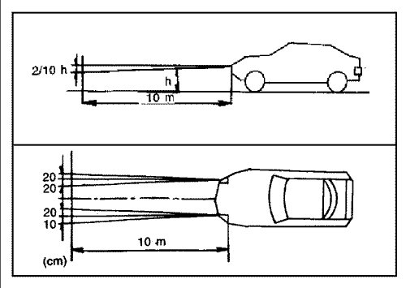
- Переключатель регулировки фар (опция)
- - Проверить исправность переключателя регулировки фар.
- 0 = Водитель и передний пассажир
- 1 = Водитель и все пассажиры
- 2 = Водитель и груз в багажнике
- 3 = Водитель, все пассажиры и груз в багажнике
2. УКАЗАТЕЛИ ПОВОРОТА
- Для включения перевести переключатель указателей поворота в конечное верхнее или нижнее положение и проверить, включились ли указатели.
- По окончании поворота указатели выключаются и рычаг возвращается в исходное положение.
3. АВАРИЙНАЯ СВЕТОВАЯ СИГНАЛИЗАЦИЯ
- Нажать копку включения аварийной световой сигнализации и убедиться, что все указатели поворотов мигают одновременно.
- Замедленное мигание свидетельствует о неисправности ламп указателей поворота.
- Для выключения снова нажать кнопку.

4. ФОНАРИ ЗАДНЕГО ХОДА
- Перевести рычаг переключения передач в положение "R" и убедиться, что фонари заднего хода включились.
5. СТОП-СИГНАЛЫ
- Нажать педаль тормоза и проверить, загораются ли нижние лампы стоп-сигналов в задних комбинированных фонарях.
- Нажать педаль тормоза и проверить, загорается ли верхний центральный стоп-сигнал (опция), распложенный на задней двери.
6. ЗАДНИЙ СВЕТ, ГАБАРИТНЫЕ ОГНИ, ОСВЕЩЕНИЕ НОМЕРНОГО ЗНАКА, ДОПОЛНИТЕЛЬНЫЕ УКАЗАТЕЛИ ПОВОРОТА
- Повернуть переключатель света в положение и проверить, загорается ли задний свет, освещение номерного знака, габаритные огни и дополнительные указатели поворота.
7. КОНТРОЛЬНЫЕ ЛАМПЫ И ИНДИКАТОРЫ НА ПАНЕЛИ ПРИБОРОВ
Проверить исправность контрольных ламп в приборной панели. (Замок зажигания в положении "ON")
- Спидометр
- Тахометр
- Датчик уровня топлива
- Датчик температуры
- Контрольная лампа указателя поворота / аварийной световой сигнализации
- Индикатор передних противотуманных ламп
- Индикатор питания
- Индикатор режима фиксации
- Индикатор дальнего света
- Переключатель счётчика пройденного пути
-
Контрольная лампа температуры охлаждающей жидкости
-
Контрольная лампа подушки безопасности
-
Контрольная лампа давления масла в двигателе
-
Контрольная лампа зарядки аккумулятора
-
Контрольная лампа тормозной системы
-
Счётчик пройденного пути
-
Индикатор положения рычага переключения передач
-
Контрольная лампа недостаточного уровня топлива
- Контрольная лампа ABS
- Индикатор неисправностей
- Контрольная лампа открытия дверей
- Индикатор задних противотуманных ламп
- Предупреждение о непристегнутых ремнях безопасности
- Контрольная лампа тормозной системы
- Загорается при включении стояночного тормоза Горящая лампа при выключенном стояночном тормозе свидетельствует о недостаточном уровне тормозной жидкости.
- Контрольная лампа давления масла в двигателе
- Загорается при включении зажигания и гаснет при пуске двигателя. Свечение лампы при езде свидетельствует о недостаточном давлении масла в двигателе.
- Контрольная лампа зарядки аккумулятора
- Загорается при включении зажигания и гаснет при пуске двигателя.
- Индикатор неисправностей
- Загорается при включении зажигания и гаснет через некоторое после пуска двигателя. Свечение лампы во время езды свидетельствует о появлении неисправности.
- Контрольная лампа температуры охлаждающей жидкости
- Загорается при перегреве охлаждающей жидкости двигателя.
- Контрольная лампа указателя поворота / аварийной световой сигнализации
- Мигает, свидетельствуя о работе указателей поворота или аварийной световой сигнализации.
- Индикатор дальнего света
- Загорается при включении дальнего света фар.
- Контрольная лампа открытия дверей
- Светится при открытых или неплотно закрытых дверях.
- Предупреждение о непристегнутых ремнях безопасности
- Загорается при непристёгнутом ремне безопасности водителя.
- Контрольная лампа недостаточного уровня топлива
- Загорается при содержании топлива в бензобаке менее 7,5 литров.
- Индикатор положения рычага переключения передач (опция)
- Показывает, в каком положении в данный момент находится рычаг переключения передач.
- Контрольная лампа ABS (опция)
- Загорается при включении зажигания и гаснет примерно через 2 секунды. Свечение лампы во время езды свидетельствует о наличии неисправностей в системе ABS.
- Контрольная лампа подушки безопасности (опция)
- При включении зажигания мигает несколько раз и гаснет. Свечение или мигание лампы во время езды свидетельствует о неисправности системы подушек безопасности.
- Индикатор питания (опция)
- При повороте ключа зажигания в положение "ON" индикатор загорается и гаснет. Также индикатор загорается при нажатии выключателя режима питания. Свечение индикатора во время езды без нажатия выключателя свидетельствует о неисправности автоматической коробки передач.
- Индикатор режима фиксации (опция)
- При повороте ключа зажигания в положение "ON" индикатор загорается и гаснет. Индикатор загорается также при нажатии выключателя режима фиксации.
- Индикатор передних противотуманных ламп (опция)
- Загорается при включении передних противотуманных фар.
- Индикатор задних противотуманных ламп (опция)
- Загорается при включении задних противотуманных фар.
- Индикатор системы TCS (опция)
- Загорается при включении зажигания и гаснет примерно через 3 секунды вместе с индикатором системы ABS.
- Индикатор TCS мигает при работе системы.

- Контрольная лампа TCS (опция)
- Загорается при включении зажигания и гаснет примерно через 3 секунды вместе с индикатором системы ABS.
- При свечении контрольной лампы система TCS не работает по следующим причинам:
- - неисправность в системе или
- - система выключена нажатием кнопки включения / выключения TCS.

- Контрольная лампа адаптивного усилителя рулевого управления (опция)
- При включении зажигания загорается и гаснет примерно через 3 секунды.

8. ПЛАФОН И ОСВЕЩЕНИЕ САЛОНА ПРИ ОТКРЫТИИ ДВЕРИ
Проверить исправность лампы центрального плафона и передних ламп для чтения.
- Лампа центрального плафона
- Лампа должна функционировать следующим образом:
- - положение "ON": Включается и горит непрерывно.
- - Положение "OFF": Лампа остаётся выключенной даже при открытой двери.
- - Перевести переключатель в положение "DOOR" (между "ON" и "OFF") и убедиться, что при открытии двери лампа загорается.

- Передняя лампа для чтения
- Проверить функционирование лампы при включении и выключении нажатием кнопки.

9. ОСВЕЩЕНИЕ ВЕЩЕВОГО ЯЩИКА (ОПЦИЯ)
Убедиться, что при открытии ящика освещение включается, когда замок зажигания находится в положении "ON".
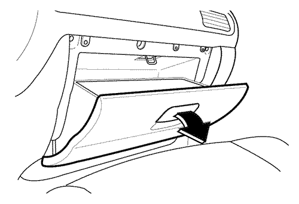
10. ПЕРЕКЛЮЧАТЕЛЬ РЕГУЛИРОВКИ ФАР (ОПЦИЯ)
При включенном ближнем свете отрегулировать положение фар соответственно нагрузке автомобиля.
- 0 = Водитель и передний пассажир
- 1 = Водитель и все пассажиры
- 2 = Водитель и груз в багажнике
- 3 = Водитель, все пассажиры и груз в багажнике
11. ФУНКЦИОНИРОВАНИЕ УКАЗАТЕЛЕЙ НА ПАНЕЛИ ПРИБОРОВ
Проверить исправность указанных ниже индикаторов на приборной панели.
- Датчик уровня топлива
- Показывает уровень топлива в баке.
- При включении зажигания после заливки топлива показания датчика постепенно меняются.
- Датчик температуры
- Показывает температуру охлаждающей жидкости двигателя, когда замок зажигания находится в положении "ON".
12. ВЫКЛЮЧАТЕЛЬ ПЕРЕДНИХ ПРОТИВОТУМАННЫХ ФАР
При нахождении переключателя света в положении включения проверить исправность передних противотуманных фар, нажимая их выключатель.
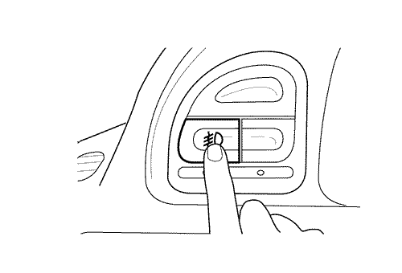
13. ВЫКЛЮЧАТЕЛЬ ЗАДНИХ ПРОТИВОТУМАННЫХ ФАР (ОПЦИЯ)
Нажать выключатель при включенных передних противотуманных фарах или когда переключатель находится в положении ( ), и проверить функционирование задних противотуманных фар.
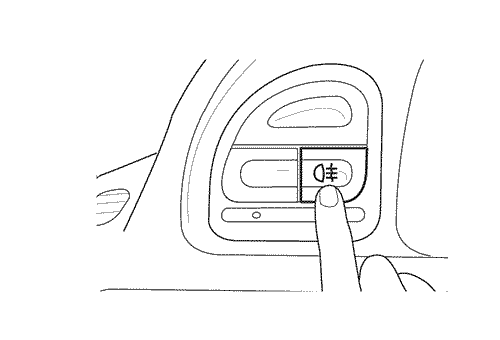
14. КНОПКА ОБОГРЕВА ЗАДНЕГО СТЕКЛА И НАРУЖНЫХ ЗЕРКАЛ
- Без таймера
- Нажать кнопку при нахождении замка зажигания в положении "ON" и проверить функционирование системы обогрева. При включении обогрева заднего стекла индикатор загорается. Для выключения обогрева снова нажать кнопку.
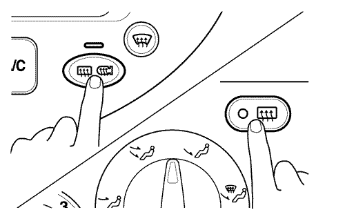
- С таймером (опция)
- Нажать кнопку: обогрев заднего стекла выключится автоматически примерно через 10 минут.
15. РЕГУЛЯТОР ОСВЕЩЕНИЯ ПРИБОРОВ (ОПЦИЯ)
Убедиться в возможности управления интенсивностью освещения приборов с помощью поворотного регулятора.
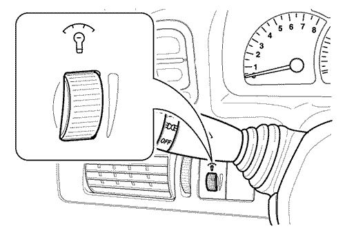
16. ВЫКЛЮЧАТЕЛЬ ЗВУКОВОГО СИГНАЛА
Нажатием в центр рулевого колеса (при отсутствии подушки безопасности) или кнопки в его правой или левой части (при наличии подушки безопасности в центре) проверить исправность звукового сигнала.
17. ФУНКЦИОНИРОВАНИЕ СТЕКЛООЧИСТИТЕЛЕЙ И ОМЫВАТЕЛЕЙ
- Выключатель стеклоочистителя
- При включенном зажигании переместить рычаг вверх и проверить, плавно ли движутся стеклоочистители.
- OFF = выкл.
- INT = ход с интервалом
- - При включенном зажигании повернуть рычаг в положение INT и, поворачивая регулятор, задать скорость движения стеклоочистителей.
- LO = непрерывный ход, медленно
- HI = непрерывный ход, быстро
- - Однократный ход
- Для однократного прохода стеклоочистителей необходимо слегка передвинуть рычаг в сторону положения INT и отпустить.

- Выключатель стеклоомывателя
- Потянуть рычаг к рулевому колесу и удерживать его не более 0,6 секунды, при этом на лобовое стекло должна распрыскаться омывающая жидкость, стеклоочистители должны оставаться неподвижными. Потянуть рычаг к рулевому колесу и удерживать его в таком положении более 0,6 секунды - на лобовое стекло распрыскается омывающая жидкость, и несколько раз выполнится ход стеклоочистителей.

- Автоматическое включение стеклоочистителей с помощью датчика дождя (опция)
- Нанеся немного воды на верхнюю часть лобового стекла (датчик дождя) при замке зажигания в положении AUTO, проверить плавность хода стеклоочистителей.

18. ВЫКЛЮЧАТЕЛЬ ОМЫВАТЕЛЯ И ОЧИСТИТЕЛЯ ЗАДНЕГО СТЕКЛА (ОПЦИЯ)
Переместить рычаг от рулевого колеса и проверить работу омывателя и очистителя заднего стекла. Первое положение (исходное) = медленный непрерывный ход стеклоочистителя.
Второе положение (положение рычага) = омыватель и очиститель стекла
- Ход с интервалами и автоматическое управление (опция, только для TACUMA/REZZO)
Убедиться, что при нахождении переключателя в первом положении очиститель работает с интервалами, а после включения задней передачи при работающем стеклоочистителе лобового стекла включается автоматически.
19. МАГНИТОЛА, ДИНАМИКИ, АНТЕННА (ОПЦИЯ)
Аудиосистемы (опция)
Проверить работу магнитолы, динамиков и антенны.
Пульт дистанционного управления (опция)
Проверить работу пульта дистанционного управления на рулевом колесе.
<Модели для Западной Европы>
Кнопка |
Режим |
Кратковременное нажатие |
Длительное нажатие |
VOL + |
Все |
Увеличение уровня громкости |
VOL - |
Все |
Уменьшение уровня громкости |
SRC |
Все |
Изменение источника (режима) |
ON/OFF |
Все |
Выключение звука или питания |
Включение питания |
SEEK |
Радио |
Следующая имеющаяся в памяти станция |
Следующая принимаемая станция |
Кассеты |
S-CPS вперёд |
CD |
Следующий диск |
Следующая композиция |
<Другие модели>
Кнопка |
Режим |
Кратковременное нажатие |
Длительное нажатие |
VOL + |
Все |
Увеличение уровня громкости |
VOL - |
Все |
Уменьшение уровня громкости |
РЕЖИМ |
Все |
Изменение режима |
PWR |
Все |
Включение/выключение питания |
SEEK |
Радио |
Следующая имеющаяся в памяти станция |
Следующая принимаемая станция |
Кассеты |
Вперёд AMS |
Перемотка вперёд |
CD |
Следующая композиция |
. |
20. ДЕРЖАТЕЛЬ СТАКАНОВ
Проверить исправность держателя стаканов под панелью управления кондиционером, нажав на него. После проверки вдавить его внутрь панели, пока он не зафиксируется.

21. ПРИКУРИВАТЕЛЬ
Проверить исправность прикуривателя. Для этого при положении "АСС" или "ON" замка зажигания вдавить прикуриватель в гнездо. После накаливания прикуриватель автоматически поднимется вверх.
Примечание: Если в течение 30 секунд прикуриватель не поднимается, следует вынуть его и осмотреть.
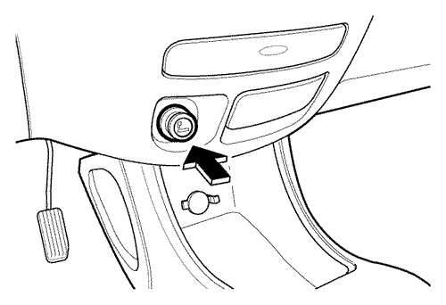
22. ЧАСЫ
При положении "ON" замка зажигания проверить исправность часов, нажав указанную ниже кнопку.
- H: кнопка выставления часа
- Нажатием кнопки выставляются цифры часа.
- М: кнопка выставления минуты
- Нажатием кнопки выставляются цифры минуты.
- S: кнопка округления часа.
- Например, нажатие данной кнопки при показании часов в пределах от 8:00 до 8:29 ведёт к выставлению часов на 8:00. При показании от 8.30 до 8.59 - к выставлению на 9.00.
- 8:00 - 8:29 → 8:00
- 8:30 - 8:59 → 9:00
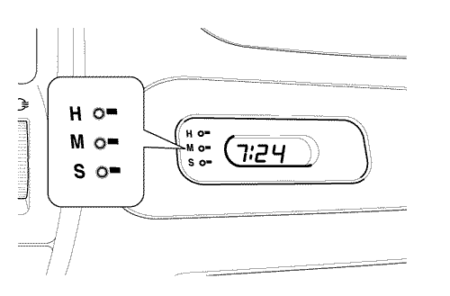
Цифровые часы с индикацией внешней температуры (опция)
- H: кнопка выставления часа
- М: кнопка выставления минуты
- Т: кнопка вывода на дисплей температуры
- Для вывода на дисплей внешней температуры нажать кнопку.
- Индикация на дисплее поменяется следующим образом:
- Время → По Цельсию (°С) → По Фаренгейту (°F)
23. ЗАМОК ДВЕРИ
С помощью ключа проверить открытие и закрытие замка двери.
Закрытие и открытие всех дверей изнутри возможно нажатием или вытягиванием ручек закрытия/закрытия дверей, расположенных на внутренней стороне дверей.
Нажатие рычага открытия/закрытия двери водителя невозможно, если дверь открыта. Благодаря этому предотвращается случайное запирание двери.
- Система замков с центральным управлением (опция)
- При блокировке или деблокировке замка двери водителя возможна одновременная блокировка или деблокировка всех дверей автомобиля, включая заднюю (опция).
- Замки дверей с защитой от детей
- Убедиться, что открытие задней двери изнутри невозможно, если металлический стержень под замком одной из задних дверей поднят вверх.

24. ОПУСКНОЕ СТЕКЛО ДВЕРИ
Проверить исправность опускных стёкол дверей.
Окна с механическими стеклоподъёмниками
Стёкло поднимается и опускается вращением ручки стеклоподъёмника в двери.

Окна с автоматическими стеклоподъёмниками (опция)
- Управление стеклоподъёмниками осуществляется при положении "ON" замка зажигания с помощью переключателей, расположенных в дверях.
- Для опускания стекла необходимо нажать и придерживать нажатой верхнюю часть переключателя.
- Для поднятия стекла необходимо приподнять и придерживать в таком положении верхнюю часть переключателя. По достижении стеклом необходимой высоты переключатель следует отпустить.

- Кнопка блокировки стёклоподъёмников (опция)
- При нажатом положении данной кнопки открытие всех стёкол возможно только с помощью переключателей, расположенных на двери водителя.
- Для выключения деблокировки стеклоподъёмников необходимо снова нажать кнопку.

25. НАРУЖНЫЕ ЗЕРКАЛА ЗАДНЕГО ВИДА
Проверить исправность регулятора, расположенного на двери водителя.

26. РЕГУЛИРУЕМОЕ РУЛЕВОЕ КОЛЕСО (ОПЦИЯ)
Проверить работу регулируемого рулевого колеса.
- Для регулировки рулевого колеса необходимо переместить рычаг под рулевой колонкой в сторону приборной панели, а затем вернуть его в исходное положение.
27. ЛЮК В КРЫШЕ С ЭЛЕКТРОПРИВОДОМ
Управление люком осуществляется при положении "ON" замка зажигания с помощью переключателя, расположенного справа на панели лампы освещения между солнцезащитными козырьками.
- Открытие люка
- Для открытия люка необходимо нажать и придержать нажатой правую часть переключателя. Для закрытия необходимо нажать и придержать нажатой левую часть переключателя. По достижении крышой люка необходимого положения следует отпустить переключатель.
- Поднятие и опускание люка (переключатель действует только при закрытом люке)
- Для поднятия люка необходимо нажать и придержать нажатой левую часть переключателя. Для закрытия люка необходимо нажать и придержать нажатой правую часть переключателя. По достижении крышой люка необходимого положения следует отпустить переключатель.

* Допустимое расстояние между задним краем крышки люка и крышей: около ± 2 мм (0,08 дюйма).
28. СИДЕНЬЕ
Проверить исправность сидений.
- Регулировка положения переднего сиденья по горизонтали
- Для перемещения сиденья вперёд или назад необходимо поднять вверх и придерживать в таком положении рычаг, расположенный внутри под передним краем сиденья. Затем передвинуть сиденье в требуемое положение и отпустить рычаг.
- Регулировка наклона спинки переднего сиденья
- Для отклонения спинки назад необходимо поворачивать рукоятку, расположенную с наружной стороны сиденья, пока спинка не достигнет требуемого положения.
- При наличии рычага регулировки следует тянуть рычаг вверх, пока не будет достигнут необходимый угол наклона спинки.
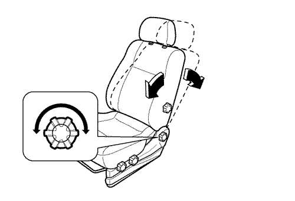
- Регулировка высоты сиденья водителя (опция)
- Для регулировки угла наклона подушки сиденья водителя необходимо поворачивать рукоятку в одном из направлений.

- Подголовники
- Для регулировки одного из передних или задних подголовников необходимо потянуть его вверх или придавить вниз, придерживая нажатой фиксирующую кнопку.
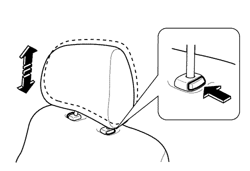
- Для наклона переднего подголовника необходимо потянуть его вперёд. Прямое положение подголовник принимает, если полностью наклонить его вперёд.
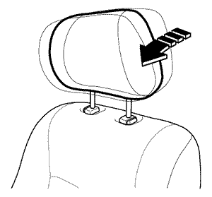
- Поясничный подпор (опция)
- Для регулировки поясничного подпора в сиденье водителя или переднего пассажира следует поворачивать рукоятку, расположенную на спинке с наружной стороны, пока не будет достигнут необходимый угол наклона.

- Переключатель автоматической регулировки сиденья (опция)
- - Регулировка положения сиденья по горизонтали
- Для перемещения сиденья вперёд или назад необходимо передвинуть переключатель в соответствующее направление. Затем подвинуть сиденье в требуемое положение и отпустить переключатель.

- - Регулировка высоты сиденья
- Для регулировки высоты передней части подушки сиденья необходимо нажать или приподнять переднюю часть переключателя. Для регулировки задней части подушки сиденья необходимо нажать или приподнять заднюю часть переключателя. Для регулировки высоты всей подушки сиденья необходимо нажать или приподнять одновременно заднюю и переднюю части переключателя.

- - Регулировка наклона спинки сиденья
- Для наклона спинки сиденья необходимо перевести вперёд или назад и придержать в таком положении верхнюю часть переключателя.

- Поворачивающееся сиденье переднего пассажира (опция)
- Для поворота переднего пассажирского сиденья необходимо передвинуть его полностью вперёд, установить спинку вертикально и повернуть сиденье против часовой стрелки, прижав рычаг наружу (для моделей с правым рулём - повернуть сиденье по часовой стрелке).
- Подлокотник (опция)
- Для использования подлокотника следует откинуть его вперёд.
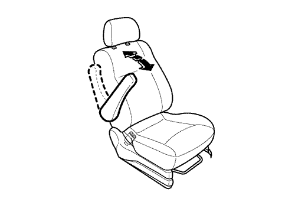

- Откидная подставка на спинке переднего сиденья (опция)
- Для использования подставки следует повернуть её вверх.

- Складывающаяся спинка заднего сиденья (опция)
- Передвинуть рычаги на всех частях спинки, чтобы разблокировать её, затем нагнуть спинку вперёд и уложить вниз.
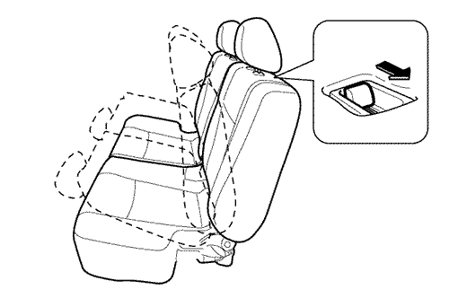
- Складывающееся заднее сиденье (опция)
- Потянуть за кольцо позади каждой из подушек заднего сиденья и поднять их.
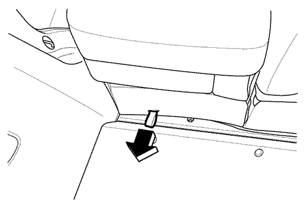
- С помощью встроенного крючка зафиксировать подушки.
- Длина лент с фиксирующим крючком может регулироваться.
- Съёмные задние сиденья (опция)
- Откинуть подушки заднего сиденья вперёд, с обеих сторон каждой части сиденья отсоединить шарниры, опустив фиксирующий рычажок, затем поднять подушки.

- Регулировка положения центрального заднего сиденья по горизонтали (опция)
- (только для сидений из 3 частей)
- Потянуть вперёд и удерживать в таком положении рычаг подушки сиденья. Затем передвинуть сиденье в требуемое положение и отпустить рычаг.

- Регулировка угла наклона спинки заднего сиденья (опция)
- (только для сидений из 2 частей)
- Для наклона спинки задних сидений назад необходимо удалить заднюю полку, оттянуть фиксирующий стрежень и наклонить спинку до требуемого положения.
29. РЫЧАГ ОТПИРАНИЯ КРЫШКИ ЗАЛИВНОГО ОТВЕРСТИЯ ТОПЛИВНОГО БАКА
Заглушить двигатель и открыть крышку заливного отверстия, потянув рычаг, расположенный слева от сиденья водителя.
30. РЫЧАГ ОТПИРАНИЯ КРЫШКИ БАГАЖНИКА
Проверить исправность рычага или кнопки отпирания крышки багажника.


31. РЫЧАГ ОТПИРАНИЯ КАПОТА
Для открытия капота необходимо потянуть ручку отпирания, расположенную внизу слева от приборной панели.
Затем нажать крючок вправо и поднять капот.
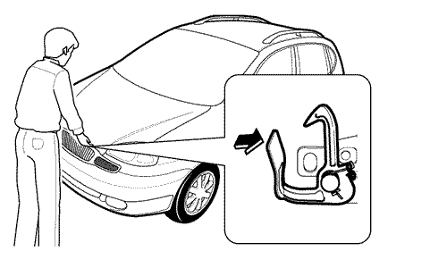
Для удерживания капота открытым следует вставить опорный стержень в соответствующее отверстие во внутренней стороне капота.

32. ПРОТИВОУГОННАЯ СИСТЕМА (ОПЦИЯ)
- Иммобилайзер
- Иммобилайзер предотвращает пуск двигателя, изолируя источник питания от системы зажигания, топливного насоса и топливных инжекторов; к системе иммобилайзера также относится механический ключ зажигания, оснащённый интегрированным передатчиком с электронным кодом. Убедиться, что при включении зажигания загорается и затем гаснет индикатор противоугонной системы.
- Внешняя защита
- - Включение системы
- 1. Закрыть все окна.
- 2. Повернуть ключ зажигания в положение "LOCK" и вынуть.
- 3. Убедиться, что в автомобиле не осталось пассажиров.
- 4. Закрыть все боковые двери, капот и заднюю дверь. Запереть все двери нажатием кнопки блокировки на ключе-передатчике. При этом произойдёт однократное мигание указателей поворота, свидетельствуя, что все двери заперты.
- 5. Убедиться, что индикатор сигнализации в правой части цифровых часов начал мигать.
- 6. Индикатор сигнализации мигает каждые 0,8 секунды (0,1 секунды: вкл., 0,7 секунды: выкл.). После начала мигания индикатора сигнализация включена.
- - Проверка системы
- 1. Открыть все окна
- 2. Включить систему, как указано в пункте "Включение системы". Передние двери должны быть закрывать с помощью ключа-передатчика. Обязательно следует убедиться, что индикатор сигнализации включился.
- 3. С помощью выключателя блокировки двери внутри салона отпереть одну из дверей. При этом должна включиться звуковая сигнализация.
- 4. Выключить сигнализацию, отперев дверь либо ключом, либо передатчиком.
- 5. Повторить процедуру для капота и других дверей, включая заднюю. При проверке капота следует также убедиться, что сигнализация срабатывает при отключении и последующем подключении аккумулятора.
33. СИСТЕМА ДИСТАНЦИОННОГО УПРАВЛЕНИЯ ЗАМКАМИ С ПРОТИВОУГОННОЙ ФУНКЦИЕЙ (ОПЦИЯ)
С помощью передатчика проверить исправность системы дистанционного управления замками.
Блокировка дверных замков и включение противоугонной системы
Нажать и отпустить кнопку блокировки замков дверей на передатчике. В результате на нём включится и выключится светоизлучающий диод.
После этого произойдёт блокировка замков всех дверей, однократно включатся и выключатся лампы аварийной сигнализации и включится противоугонная система.
При нахождении замка зажигания в положении "ON" работа противоугонной системы и ламп аварийной сигнализации невозможна.
Для выключения противоугонной системы необходимо нажать и отпустить кнопку отпирания двери на брелоке-передатчике или открыть дверь ключом.
Деблокировка дверных замков и выключение противоугонной системы
Нажать и отпустить кнопку деблокировки замков дверей на передатчике. В результате на нём включится и выключится светоизлучающий диод.
После этого произойдёт деблокировка замков всех дверей, дважды включатся и выключатся лампы аварийной сигнализации и выключится противоугонная система.
Однако при нахождении замка зажигания в положении "ON" работа ламп аварийной сигнализации невозможна.
Автоматическое запирание дверей
Если дверь закрыта или не происходит пуска двигателя в течение 30 секунд после отпирания двери с помощью передатчика при включенной противоугонной системе, автоматически происходит блокировка замков всех дверей и включение противоугонной системы.
Функция противоугонной сигнализации
При включенной противоугонной системе 30-секундная звуковая сигнализация и мигание ламп аварийной сигнализации включаются в следующих ниже случаях.
- Открытие двери не с помощью передатчика или ключа зажигания.
- Пуск двигателя с помощью ключа зажигания или иным способом при включенной противоугонной системе.
Для выключения звуковой и световой сигнализации следует нажать любую кнопку передатчика.
34. ДЕРЖАТЕЛЬ СОЛНЦЕЗАЩИТНЫХ ОЧКОВ
Убедиться, что держатель солнцезащитных очков открывается легко и закрывается надёжно.
Для открытия держателя необходимо нажать на заднюю часть крышки. Для закрытия следует поднять крышку вверх до щелчка.

35. ВЫКЛЮЧАТЕЛЬ ОБОГРЕВА СИДЕНИЙ (ОПЦИЯ)
Проверить исправность обогрева сидений, нажав кнопки при нахождении замка зажигания в положении "ON".
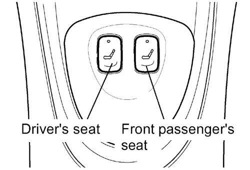